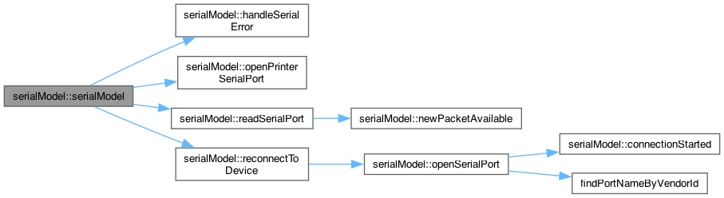
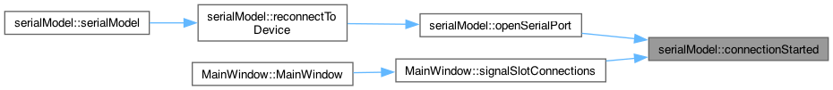
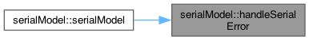
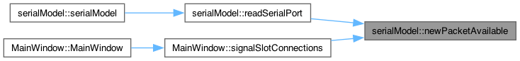

Public Slots |
Signals |
Public Member Functions |
Static Public Member Functions |
Public Attributes |
Private Slots |
Private Member Functions |
Private Attributes |
List of all members
serialModel Class Reference
serialModel, seri port ile iletişim kurmak için kullanılan bir Singleton sınıfıdır. More...
#include <serialmodel.h>
Inheritance diagram for serialModel:

Collaboration diagram for serialModel:

Public Slots | |
| void | handleSerialError (QSerialPort::SerialPortError error) |
Signals | |
| void | errorOccurred () |
| void | serialconnectivityStatus (bool status) |
| void | newPacketAvailable (const QByteArray &packet) |
| void | serialOpened () |
| void | connectionStarted () |
| void | connectionStopped () |
Public Member Functions | |
| bool | isopen () const |
| Seri portun açık olup olmadığını kontrol eder. | |
| bool | serialWrite (const QByteArray &data) |
| Seri porta veri yazar. | |
| bool | printerSerialWrite (const QByteArray &data) |
| Printer Seri portuna veri yazar. | |
| bool | openSerialPort (quint16 vendorId) |
| Belirtilen üretici kimliği ile seri portu açar. | |
| bool | openPrinterSerialPort () |
| printerSerial için port işlemlerini init (kurulum) eder | |
| void | closeSerialPort () |
| Seri portu kapatır. | |
| void | readSerialPort () |
| Seri porttan tüm mevcut verileri okur. | |
Static Public Member Functions | |
| static serialModel & | getInstance () |
| serialModel sınıfının tekil (instance) örneğini alır. | |
Public Attributes | |
| QSerialPort | serial |
| QSerialPort | printerSerial |
Private Slots | |
| void | reconnectToDevice () |
| cihazı tekrar bağlamak için seri port'u açar | |
Private Member Functions | |
| serialModel () | |
| serialModel sınıfının yapıcı fonksiyonu, seri portu başlatır ve seri iş parçacığı başlatılır. | |
| ~serialModel () | |
| serialModel sınıfının yıkıcı fonksiyonu, seri iş parçacığını sonlandırır ve bitmesini bekler. | |
| QString | findPortByVendorID (quint16 vendorId) |
| serialModel (const serialModel &)=delete | |
| serialModel & | operator= (const serialModel &)=delete |
Private Attributes | |
| QByteArray | serialBuffer |
| QTimer * | reconnectTimer |
Detailed Description
serialModel, seri port ile iletişim kurmak için kullanılan bir Singleton sınıfıdır.
Bu sınıf, seri port ile haberleşme işlemleri için kullanılır. Seri port üzerinden veri gönderme, veri alma ve hata yönetimi işlemlerini sağlar.
Constructor & Destructor Documentation
◆ serialModel() [1/2]
|
private |
serialModel sınıfının yapıcı fonksiyonu, seri portu başlatır ve seri iş parçacığı başlatılır.
Here is the call graph for this function:

◆ ~serialModel()
|
private |
serialModel sınıfının yıkıcı fonksiyonu, seri iş parçacığını sonlandırır ve bitmesini bekler.
◆ serialModel() [2/2]
|
privatedelete |
Member Function Documentation
◆ connectionStarted
|
signal |
Here is the caller graph for this function:

◆ connectionStopped
|
signal |
Here is the caller graph for this function:
◆ errorOccurred
|
signal |
◆ findPortByVendorID()
|
private |
◆ getInstance()
|
static |
serialModel sınıfının tekil (instance) örneğini alır.
- Returns
- serialModel sınıfının tekil örneğine referans.
◆ handleSerialError
|
slot |
Here is the caller graph for this function:

◆ newPacketAvailable
|
signal |
Here is the caller graph for this function:

◆ operator=()
|
privatedelete |
◆ serialconnectivityStatus
|
signal |
◆ serialOpened
|
signal |
Member Data Documentation
◆ printerSerial
| QSerialPort serialModel::printerSerial |
◆ reconnectTimer
|
private |
◆ serial
| QSerialPort serialModel::serial |
◆ serialBuffer
|
private |
The documentation for this class was generated from the following files:
Generated by